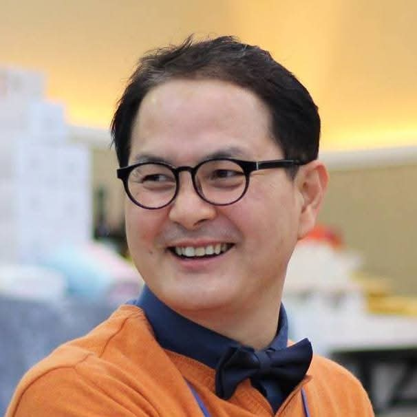

전남 화순에서 농산물 가공식품 브랜드 '시골사람들'을 이끌며, 스마트소셜협동조합 이사장으로서 지역 농업의 부가가치 창출과 지속 가능한 공동체 경제를 현장에서 실천합니다.
2010년부터 전남농업기술원, 소상공인시장진흥공단, 중진공, 세종대·숙명여대·서울벤처대학원대학교 등에서 강의해 온 베테랑. 초보자도 당일 완성하는 100% 실습 교육을 펼칩니다.
고용노동부 영상 창작자 양성과정 전담 강사 경력과 네이버 공식 인플루언서 역량을 바탕으로, 생성형 AI 숏폼(클립·쇼츠)과 블로그를 결합한 차세대 콘텐츠 브랜딩을 이끕니다.
전남대 공대 산업공학과를 졸업하고 동신대 대학원에서 경영학 석사(논문: 긍정심리자본 연구)를 마쳤습니다. 시스템적 공학 마인드와 조직 경영의 통찰이 교육의 단단한 밑바탕이 되었습니다.
(사)스마트소셜연구회 부회장, 전남지방공무원교육원 외래강사, 세종대·숙명여대 외래강사로 활동하며 광주시 빛창블로그, 공공기관 및 농어촌공사 재능뱅크 SNS 홍보 교육을 선도했습니다.
전라남도 농식품가공유통 컨설턴트, 광주경제고용진흥원 자문위원으로 활약하며 '빛고을장터', '한국인의밥상' 등 10여 개 쇼핑몰을 직접 컨설팅하고 소상공인시장진흥공단 튼튼창업 강좌를 이끌었습니다.
스마트소셜협동조합 이사장에 취임하고, 고용노동부 1인 미디어 영상창작자 양성과정(1·2기) 및 OBS 3채널 생방송을 진행하며 영상 미디어 교육 역량을 고도화했습니다.
전남농업기술원 생명농업대학 디지털마케팅, 챗GPT 전자책 창작소, ChatGPT 농업적 활용 등 최신 생성형 AI와 숏폼 콘텐츠를 접목한 실무 교육을 활발히 펼치고 있습니다.
| 기관 / 단체 | 직위 | 기간 |
|---|---|---|
| 스마트소셜협동조합 | 이사장 | 2019~2025 |
| (사)스마트소셜연구회 | 부회장 | 2012~2020 |
| 시골사람들 | 대표 | 현재 |
| (재)광주광역시 경제고용진흥원 | 자문위원 | 2016~2018 |
| 지리산권 관광아카데미 마케팅과정 | 자문교수 | 2016 |
| 서울벤처대학원대학교 | 자문강사 | 2015~2017 |
| (사)광주국제행사성공시민협의회 | 자문위원 | 2013~2015 |
| 세종대학교 바이럴마케팅 CEO과정 | 외래강사 | 2014 |
| 전남지방공무원교육원 | 외래강사 | 2012, 2014 |
| 숙명여자대학교 안전창업/판매촉진 | 외래강사 | 2012 |
전남농업기술센터 ChatGPT 농업 활용, 챗GPT 전자책 창작소, 모바일 AI 도구를 활용한 15~60초 숏폼(클립·쇼츠) 기획 및 원스톱 제작 실습
중진공, 소상공인시장진흥공단 튼튼창업, 온채널 라이브커머스, 상품 소싱부터 상세페이지·검색 SEO까지 매출 직결 쇼핑몰 구축
고용노동부 1인 미디어 창작자 양성과정(1·2기), OBS 3채널 생방송 송출 실습, 창평 달팽이 유튜버 등 카메라 무빙부터 스마트폰 편집까지
전남농업기술원 생명농업대학 디지털마케팅, 신안군·고흥군·장흥군 농업대학, 전남 마을로 플러스 청년활동가 마케팅 코칭
| 2023~2025 | 전남농업기술원 생명농업대학 디지털마케팅과정 |
| 2025.04~05 | 챗GPT 전자책 창작소 |
| 2024.10 | 전남농업기술센터 ChatGPT 농업적 활용 |
| 2023~2024 | 신안군농업기술센터 농업대학 온라인마케팅과정 |
| 2023 | 창평 도시재생지원센터 달팽이 유튜버 교육프로그램 |
| 2023 | 전남 마을로 플러스 청년활동가 온라인 마케팅 |
| 2021~2023 | 장흥군 마케터양성 과정 (1기~3기) |
| 2021 | 중소기업진흥원 스마트스토어 운영 온·오프라인 강좌 |
| 2020~2022 | 소상공인시장진흥공단 튼튼창업 (스마트스토어/라이브커머스) |
| 2021 | 고흥군 농업인 경영마케팅 교육 / 의정부 신중년창직교육원 |
| 2020~2021 | 경기도 일자리재단 가치거래자 양성과정 |
| 2017~2025 | 빛고을장터 및 '한국인의밥상' 운영·유통 컨설팅 |
| 2017~2019 | 전라남도 농식품가공유통 컨설턴트 지원사업 |
| 2018 | 충청북도 자치연수원 사물인터넷과 농업활용 전략 |
| 2017 | 고용노동부 1인 미디어 영상콘텐츠 창작자 양성과정 (1, 2기) |
| 2017 | 조선대 취업아카데미, 담양도립대, 순천·보성·영암 농업기술센터 |
| 2017 | 광주포럼 OBS 3채널(유튜브, 트위치, 팟플레이어) 동시 생방송 |
| 2015~현재 | 서울벤처대학원대학교 CEO SNS MBA과정 |
| 2012~2014 | 한국농어촌공사 스마일재능뱅크 찾아가는 SNS농어촌교육 |
| 2010~2019 | 광주시청, 순천시청, 광양시청, 강진군청, 완도군청 등 다수 출강 |
수업이 끝났을 때 수강생의 손에 완성된 영상, 등록된 상품, 발행된 포스팅이 쥐어지는 100% 현장 실습형 강의를 고집합니다.
어려운 전문 용어 대신 일상의 언어로, 막혔던 지점을 하나씩 함께 풀어가며 배움의 문턱을 확실히 낮춥니다.
만드는 것에서 멈추지 않고, 고객이 찾아오고 스토어의 매출로 직결되는 실전 비즈니스 관점을 전합니다.